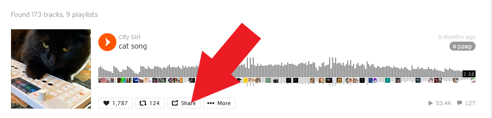
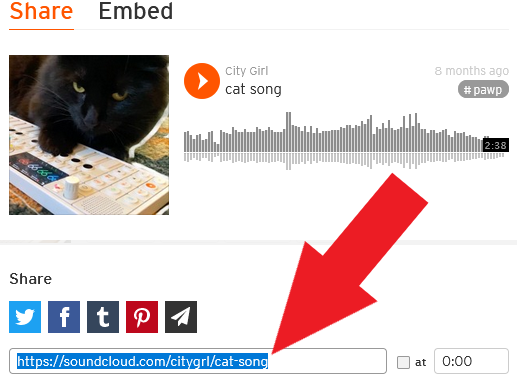
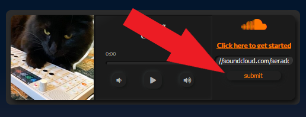

×

Let's get Started
This app is powered by SoundCloud, a music streaming platform. It's free and signup is not required.
For best results, use Firefox/Chrome on Desktop.
Step 1) Find a Track
Head over to SoundCloud's homepage by clicking here.
Use the search box in the center and enter the title of a track and/or artist.
Step 2) Pick a Track
Checkout the search results. When you find a track you like, click on the "share" button below it
In the popup, copy the URL of the track.
Step 3) Load a Track
Return to the application and paste the URL in the form, then press "submit."
Not all tracks can be streamed, if your track is unable to be loaded, you will be asked to try a different track.
created by Samnang Penh and John Sy